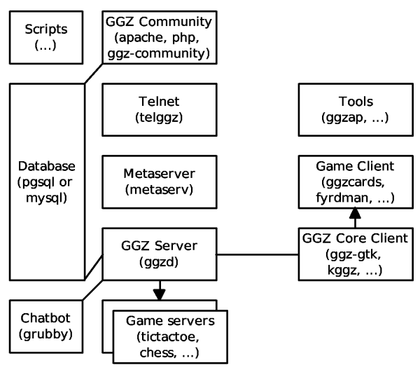
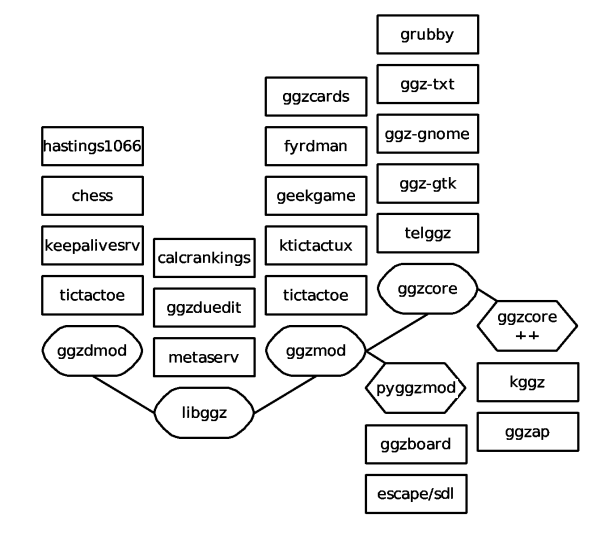

The uncountable number of GGZ libraries, programmes, games, tools and scripts can be confusing for many. The architecture documentation provides the big picture needed to understand where each component of GGZ has its place.
A lot of care is spent on separating the design from the actual implementation. For example, the GGZ protocol is formally specified, and its handling is implemented by the ggzcore library on the client side, and the ggzd daemon (the GGZ server) on the server side. Likewise, game protocols can be handled by multiple game clients and servers. And finally, code is often bundled in libraries to ease the creation of programming language wrappers.
The following explanation of existing structures relates to a full GGZ installation. As can be read in the GGZ Hosting Guide, only some parts of all this is considered essential.
The illustration below outlines the relation of client versus server side, and identifies child processes (arrows) and network connections (straight lines).

A GGZ server, which stores its player and game history information in a database, is running on a server, ready to launch some game servers. In parallel, a telnet process waits for chatters so it can act as a pseudo-client and connect to the server. Likewise, the chatbot performs some pseudo-client duties. The meta server is queried by clients and gets its data from running ggzds. The community pages handle web access to all database contents, and its scripts are periodically running in the background in order to lower performance penalties.
On the client side, a core client is launched and connects to the GGZ server. From time to time a game is played, resulting in launching it from the core client. Additional tools such as Competition Calendar improve the level of GGZ integration on the desktop.
More interesting to the develop is the implementation side. This is displayed in the following illustration.

As can be seen, four base libraries exist of which some come with wrappers for various programming languages. In vertical direction, programmes or games which depend on the libraries can be seen.
There is more information available on the following topics: Chatbot (grubby) architecture (in the grubby admin manual and in its source tree), server (ggzd) architecture (in its design specification), as well as ggzboard and ggzcards architecture documents.
All the libraries come with API documentation is several formats.